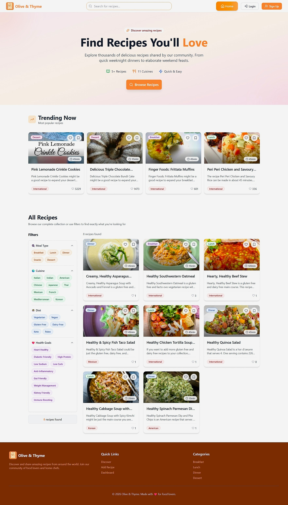
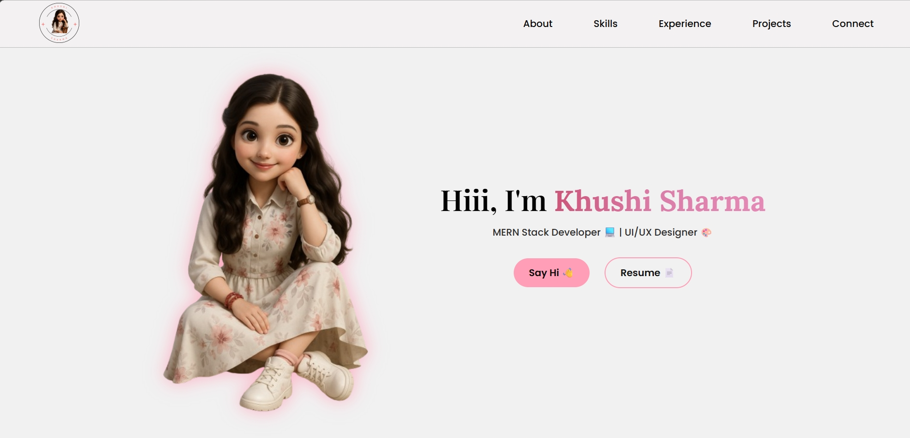
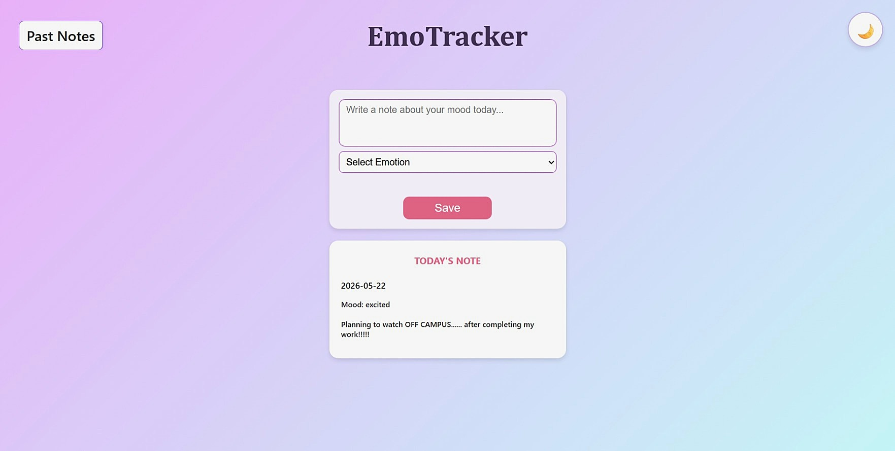
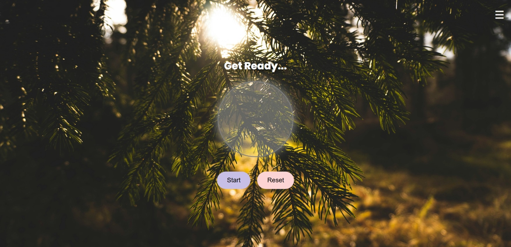

A full-stack recipe sharing platform — discover, share, and manage recipes with health-goal filtering, JWT auth, and real-time notifications.Containerized application using Docker and Docker Compose. Multi-stage builds for both frontend (React + Nginx) and backend (Express + Node.js).
Key Features

A fully responsive developer portfolio built with HTML, CSS, and JavaScript — designed to showcase both coding and UI/UX work. Features smooth scroll animations, a working contact form via Formspree, and a distinct pink-gradient visual identity.
Highlights

A minimal, soothing mood-tracking app built with React and Vite, enhanced with AI-powered journaling insights via the Gemini API and with a lightweight Express backend to securely handle API requests. EmoTracker helps you express your emotions, journal your day, and receive personalized reflections — one entry at a time, in a calm pastel space and persists entries across sessions with localStorage.
Features

A calming breathing meditation web app that guides users through mindful breathing routines — with peaceful visuals, ambient music, and animated prompts that merge beautiful UI with real interactivity.
Features